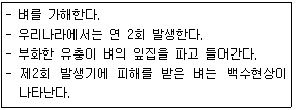

종자기사 (2012-08-26 기출문제)
1과목: 종자생산학
1. 종자 정선 시 액체친화성을 이용한 선별이 효과적인 작물은?
- 티머시
- 클로버
- 벼
- 콩
(정답률: 38%)

2. 중복수정이란 무엇과 무엇이 결합하는 현상인가?
- 난핵 1개와 정핵 2개
- 난핵 1개와 정핵 1개, 극핵 2개와 정핵 1개
- 극핵 2개와 정핵 2개
- 난핵과 극핵, 조세포핵과 정핵
(정답률: 77%)
3. 다음 중 종자의 생리적 휴면에 해당하는 것은?
- 배휴면(胚休眠)
- 종피휴면(種皮休眠)
- 후숙(後熟)
- 타발휴면(他發休眠)
(정답률: 76%)
4. 다음 중 경실종자의 휴면타파를 위하여 가장 많이 이용하는 방법은?
- 저온처리
- 습윤처리
- 건조처리
- 종피파상
(정답률: 65%)
5. 종자를 실온에 저장했을 때 그 수명이 상대적으로 짧은 작물만으로 짝지어진 것은?
- 토마토, 상추
- 수박, 콩
- 당근, 가지
- 땅콩, 고추
(정답률: 63%)
6. 다음 국제종자보증과 검사에 대한 설명 중 맞지 않은 것은?
- 시료채취와 검사가 국제종자검사협회(ISTA) 공인검정기관에 의하여 이루어지면 등황색증명서로 표시한다.
- 표본이 비공인으로 채취되고 검사만 ISTA 공인검정기관에서 이루어지면 청색증명서로 표시된다.
- 우리나라는 OECD 회원국으로서 종자 공인검정기관이지만 ISTA 국제종자검정 기관은 아니다.
- 경제협력개발기구(OECD)의 보증표지는 유전적인 순도에 대한 보증이다.
(정답률: 72%)
7. 다음 화성유도에 관한 설명 중 맞는 것은?
- 월년생 식물의 다수는 생장점이 일정기간 추위에 노출되어야 개화한다.
- 1년생 식물의 다수는 일장에 반응하여 개화하는데 이를 중일성 식물이라 부른다.
- 무한형 식물은 영양생장을 계속하다가 개화자극이 있을 때 모든 생장점이 화기로 바뀐다.
- 유한형 식물은 개화감응을 받은 후에도 영양생장을 계속하고 일부만 화기로 바뀐다.
(정답률: 49%)
8. 종자의 저장력이 높은 작물로만 짝지어진 것은?
- 수수, 사탕무
- 귀리, 콩
- 땅콩, 벼
- 양파, 수수
(정답률: 49%)
9. 종자소독법으로서 옳지 않은 것은?
- 약제에 침지처리
- 저온처리
- 약제에 분의 처리
- 온탕처리
(정답률: 72%)
10. 종자 저장고 내의 습도와 종자의 함수량과의 관계를 옳게 설명한 것은?
- 습도가 높아지면 종자 함수량도 비례하여 높아진다.
- 습도가 높아져도 종자 함수량은 높아지지 않는다.
- 습도는 온도에 따라 변하므로 종자 함수량과는 관계가 없는 것이다.
- 습도가 높아도 온도가 낮을 때는 관계가 없고 온도가 높을 때는 종자 함수량이 높아진다.
(정답률: 70%)
11. 오이의 암꽃 착생을 촉진하는 것은?
- 고온 처리
- 에테폰(에스렐) 처리
- 질산은 처리
- 지베렐린 처리
(정답률: 69%)
12. 단일성 식물끼리 짝지은 것은?
- 보리ㆍ밀
- 양파ㆍ당근
- 상추ㆍ유채
- 담배ㆍ들깨
(정답률: 72%)
13. 종자의 휴면타파에 효과가 인정되고 있는 화학물질을 나열한 것은?
- 지베렐린 KNO3
- HNO3, PEG(Polyethylene glycol)
- PEG, K3PO4
- K3PO4, 지베렐린
(정답률: 81%)
14. 다음 웅성불임에 대한 설명 중 옳은 것은?
- 웅성불임은 미토콘드리아의 DNA와 핵 내의 유전자에 의하여 지배된다.
- 세포질적 웅성불임은 화분친의 유전자 구성에 따라 임성이 결정된다.
- 세포질 유전자적 웅성불임은 핵 내의 임성회복 유전자가 있어도 불임이다.
- 유전자적 웅성불임은 화분친의 유전자 구성에 따라 비멘델식 유전을 한다.
(정답률: 36%)
15. 다음 중 휘묻이로 주로 번식하는 것은?
- 구즈베리
- 앵두나무
- 커런트
- 모과나무
(정답률: 59%)
16. 광발아종자에서 발아를 촉진시키는 파장의 범위로 가장 적절한 것은?
- 700~760nm
- 400~440nm
- 660~700nm
- 500~560nm
(정답률: 66%)
17. 다음 중 1차 감염묘를 바르게 설명한 것은?
- 배지에서 감염된 묘
- 병해묘로부터 감염된 묘
- 종묘 자체에서 발병된 묘
- 취급수분에서 감염된 묘
(정답률: 73%)
18. 표준발아검사시 치상하는 종자수를 바르게 나타낸 것은?
- 50립씩 2반복
- 50립씩 3반복
- 100립씩 2반복
- 100립씩 4반복
(정답률: 90%)
19. 자연교잡률이 100% 정도인 식물은?(오류 신고가 접수된 문제입니다. 반드시 정답과 해설을 확인하시기 바랍니다.)
- 자가수정 식물
- 타가수정 식물
- 부분타식성 식물
- 내혼계 식물
(정답률: 59%)
20. 테트라졸리움(Tetrazolium)검사 시 종자에 나타나는 붉은색 물질은 무엇인가?
- Bromide
- Formazan
- Methylbromide
- Red Tetrazolium
(정답률: 73%)
2과목: 식물육종학
21. 하나의 유전자가 2개 이상의 형질발현에 관여하는 경우를 ( )이라고 한다. ( )안에 들어갈 말은?
- 유전자의 위치 효과 영향
- 변경유전자 작용
- 유전자의 다면적 발현
- 중복유전자 작용
(정답률: 87%)
22. 기존의 유전자원 중에서 찾을 수 없는 형질 또는 유전자를 얻기 위하여 널리 이용되고 있는 육종법은?
- 순계분리 육종법
- 돌연변이 육종법
- 여교잡 육종법
- 집단 선발법
(정답률: 73%)
23. 자식성 식물의 순계내 선발은 효과가 없다는 순계설을 제안한 사람은?
- 요한센(Johannsen)
- 멘델(Mendel)
- 다윈(Darwin)
- 뮐러(Moller)
(정답률: 69%)
24. 순계분리법을 가장 효과적으로 적용할 수 있는 육종재료는?
- 자식성 작물의 재래종
- 타식성 작물의 재래종
- 자가불화합성이 강한 재래종
- 웅성불임성이 강한 재래종
(정답률: 57%)
25. 고위도 지역으로 작물 재배 한계를 확대할 수 있게 한 가장 중요한 육종의 성과는?
- 품질 개선
- 내충성 강화
- 저온 내성 강화
- 내염성 강화
(정답률: 73%)
26. 자식성 집단과 타식성 집단의 유전적 특성에 대한 설명이 옳은 것은?
- 자식을 계속한 m세대 집단의 동형집합체의 빈도는 (1/2)n-1이다.
- 농가에서 오랫동안 재배해 온 벼, 보리, 콩 등 자식성 작물의 지방종은 여러 가지 유전자형을 포함한 이형접합성 집단이다.
- 타식성 식물집단의 유전자형의 빈도는 집단의 크기에 상관없이 하디-바인베르크의 법칙을 따른다.
- 타식성 집단의 근교약세의 원인은 근친교배에 의해 동형접합체로 되고, 이형접합체에 잠재해 있던 열성유전자가 분리되기 때문이다.
(정답률: 60%)
27. 교배와 상관없이 한 번 나타난 변이가 대를 계속해서 나타나는 유전적 변이는?
- 방황변이
- 돌연변이
- 환경변이
- 개체변이
(정답률: 63%)
28. 분리육종법과 교잡육종법의 근본적 차이는?
- 분리육종법은 환경변이를 이용하고, 교잡육종법은 유전변이를 이용한다.
- 분리육종법은 유전변이를 작성하여 이용하고, 교배육종법은 이미 존재하는 변이를 이용한다.
- 분리육종법은 유전변이를 이용하고, 교잡육종법은 환경변이를 이용한다.
- 분리육종법은 이미 존재하는 변이를 이용하고, 교잡육종법은 유전변이를 작성하여 이용한다.
(정답률: 56%)
29. 세포질ㆍ유전자적 웅성불임성을 이용하여 옥수수 1대 잡종 종자를 대량으로 채종하기 위해서 육종가 또는 육종기관은 어떤 종류의 계통을 세트로 유지하고 있어야 하는가?
- 웅성불임계통, 내충성계통, 근동질유전자계통
- 근동질유전자계통, 웅성불임유지계통, 다수성계통
- 내충성계통, 다수성계통, 임성회복유전자계통
- 임성회복유전자계통, 웅성불임유지계통, 웅성불임계통
(정답률: 65%)
30. 주연효과(周緣效果)에 대한 설명으로 맞는 것은?
- 파종량이 많을수록 주연효과가 커진다.
- 파종량이 적을수록 주연효과가 커진다.
- 파종량과 주연효과는 상관이 없다.
- 파종작물의 종류, 장소 등의 영향을 받지 않는다.
(정답률: 64%)
31. 멘델의 유전법칙이 아닌 것은?
- 지배의 법칙
- 대립의 법칙
- 독립의 법칙
- 분리의 법칙
(정답률: 32%)
32. 변이를 감별하는 방법은?
- 타가수정
- 후대검정
- 영양번식
- 격리
(정답률: 76%)
33. 인공교배를 시키기 위해서 양친의 개화기를 일치시켜야 한다. 교배친의 개화기 조절방법으로 가장 많이 사용하는 것은?
- 춘화처리, 파종기 조절, 일장처리
- 콜히친 처리, 온탕침지 처리, 파종기 조절
- 일장처리, 콜히친 처리, 방사선 처리
- 방사선 처리, 춘화처리, 온탕침지 처리
(정답률: 65%)
34. 보통재배 시보다 채종재배 시 주의할 내용으로 가장 부적합한 것은?
- 시비를 하지 말아야 한다.
- 포장은 교잡의 우려가 없는 곳에서 재배하여야 한다.
- 불량주는 도태하여야 한다.
- 병충해 방제에 힘써야 한다.
(정답률: 78%)
35. 유전력(遺傳率)에 대한 설명 중 옳지 않은 것은?
- 전체분산에 대한 유전분산의 비율은 광의의 유전력이다.
- 유전력이 높은 형질일수록 초기세대에서 선발효과가 크다.
- 형질의 유전력은 대상집단이나 환경에 따라 달라질 수 있다.
- 자식성 작물 잡종 후대에서는 개체보다 계통의 유전력이 작다.
(정답률: 47%)
36. 무와 같은 자가불화합성인 작물의 자식종자를 얻는 방법은?
- 다른 품종을 섞어 심는다.
- 개화기를 조절한다.
- 수분수(授粉樹)를 심는다.
- 뇌수분(蕾受粉)에 의한다.
(정답률: 77%)
37. 세포질에 들어 있는 유전 물질을 자칭하는 것은?
- 키아스마
- 플라스마진
- 상위유전자
- 삼염색체(Trisomic)
(정답률: 62%)
38. 수량에 대한 유의성 검정은 3계통 이상인 경우 F검정을 이용한 분산 분석에 의하는데 다음의 어떤 검정에 의하여 계통 간 유의차를 검정하는가?
- L.S.D(Least Significant Difference) 검정
- 회귀계수(Regression Coefficient)에 의한 검정
- T-검정
- √x(chi-square) 검정
(정답률: 52%)
39. 이배체(二倍體) 나자식물(裸子植物)의 수정을 거친 배와 배유세포의 염색체 조성은?
- 배 2n+배유 1n
- 배 2n+배유 2n
- 배 2n+배유 3n
- 배 1n+배유 3n
(정답률: 43%)
40. 분자표지를 이용한 선발에 대하여 잘못 설명한 것은?
- 꽃, 종자, 과실 등 생육 후기에 발현되는 형질도 생육 초기에 선발할 수 있다.
- 목적 형질에 관여하는 유전자가 열성인 경우에는 분자 표지를 이용해도 후대검정이 필요하다.
- 분자표지를 이용하면 선발의 효율성을 높이고 육종연한을 단축할 수 있다.
- 병이나 해충 저항성 연관표지는 접종과 같은 어려운 검정 작업이 없이도 목적 개체를 선발할 수 있다.
(정답률: 48%)
3과목: 재배원론
41. 다음의 종자 품질을 결정하는 여러 가지 조건 중에서 내적 조건에 해당하는 것은?
- 종자의 순도
- 종자의 수분함량
- 종자의 색탭과 냄새
- 종자의 발아력
(정답률: 43%)
42. 풍해의 기계적 장해에 해당되는 것은?
- 벼에서 수분 및 수정이 저해되어 불임립(不稔粒)이 발생하고, 상처에 의해 각종 병 등이 발생한다.
- 상처가 나면 호흡이 증대되어 체내의 양분 소모가 증대된다.
- 증산이 커져서 식물이 건조해진다.
- 기공이 닫혀 광합성이 감소한다.
(정답률: 39%)
43. 종자 저온 춘화처리의 과정과 효과가 맞지 않는 것은?
- 산소의 공급이 필요하다.
- 종자가 건조하지 말아야한다.
- 광에 노출시키지 않아야 한다.
- 생장점에 탄수화물이 공급되어야 한다.
(정답률: 65%)
44. 가장 높은 적산온도를 필요로 하는 작물은?
- 밀
- 옥수수
- 벼
- 메밀
(정답률: 50%)
45. 다음 중에서 생육 최저온도가 가장 낮은 작물은?
- 밀
- 호밀
- 보리
- 귀리
(정답률: 40%)
46. 다음 중 광의 보상점이 가장 높은 식물은?
- 단풍나무
- 너도밤나무
- 소나무
- 측백나무
(정답률: 43%)
47. 생력재배에 크기 공헌한 제초제로 처음으로 사용된 생장조절제는?
- 옥신(Auxin)
- 지베렐린(Gibberellin)
- 시토키닌(Cytokinin)
- 아브시스산(Abscissic acid)
(정답률: 66%)
48. 감자의 휴면타파를 위한 지베렐린의 처리 방법은?
- 절단 후 250~500ppm 지베렐린 수용액에 24시간 침지
- 절단 후 250~500ppm 지베렐린 수용액에 30~60분 침지
- 절단 후 2~5ppm 지베렐린 수용액에 24시간 침지
- 절단 후 2~5ppm 지베렐린 수용액에 30~60분 침지
(정답률: 54%)
49. 방사성 동위원소가 방출하는 방사선 중에서 가장 현저한 생물적 효과를 가지는 것은?
- 알파선
- 베타선
- 감마선
- 엑스선
(정답률: 66%)
50. 수해(水害)에 관한 설명이 바른 것은?
- 수수와 옥수수는 침수에 강한 작물이다.
- 동진벼와 추정벼는 침수에 강한 품종이다.
- 벼의 수잉기~출수개화기에는 침수에 강하다.
- 벼가 관수될 때 수온이 낮으면 높은 경우보다 피해가 더 크다.
(정답률: 49%)
51. 혼파의 이점이 될 수 없는 것은?
- 화본과 목초와 콩과 목초가 섞이면 가축의 영양상 유리하다.
- 상번초와 하번초가 섞이면 공간을 효율적으로 이용할 수 있다.
- 혼파에 의해서 토양의 비료성분을 더욱 효율적으로 이용할 수 있다.
- 화본과목초가 고정한 질소를 콩과 목초가 이용하므로 질소 비료가 절약된다.
(정답률: 59%)
52. 어느 작물의 요수량이 500이라면 단위중량 1g의 건물(乾物)을 생산하는 데 소비된 물의 양은?
- 0.5kg
- 5kg
- 50kg
- 500kg
(정답률: 60%)
53. 토양 통기를 조장하기 위한 재배적 조치가 아닌 것은?
- 답전윤환 재배를 실시한다.
- 객토를 한다.
- 중ㆍ습답에서는 휴립재배를 한다.
- 파종할 때 미숙퇴비를 종자위에 두껍게 덮지 않는다.
(정답률: 44%)
54. 1m2의 현미 무게가 1kg이고 이때 현미의 수분함량이 17%이다. 수분함량이 15%일 때 10a의 현미수량은?
- 약 293kg
- 약 488kg
- 약 512kg
- 약 976kg
(정답률: 40%)
55. 재배기간 동안 상토의 pH에 영향을 주는 주요 요인이 아닌 것은?
- 상토와 상토 구성분 자체에 포함된 석회석과 같은 식재 전 물질
- 관개수의 알칼리도
- 재배기간 동안 사용된 비료의 산도/염기도
- 재배기간 동안의 평균 기온
(정답률: 62%)
56. 벼의 생육기간 중 냉해에 의해 출수가 가장 크게 지연되는 시기는?
- 활착기
- 분얼기
- 유수형성기
- 출수기
(정답률: 59%)
57. 다음 작물 중 땅속줄기(地下莖)를 종묘로 이용하는 것은?
- 생강
- 토란
- 마늘
- 마
(정답률: 52%)
58. 토양보호와 관련된 작물분류를 올바르게 한 것은?
- 수식성작물 - 콩과 목초
- 토양수탈작물 - 채소
- 토양조성작물 - 과수
- 토양보호작물 - 목초
(정답률: 66%)
59. 일반적으로 과수재배에서 환상박피를 하는 원리로 가장 적당한 것은?
- 전류작용의 촉진
- 수분 공급의 조절
- C-N율의 증대
- 내병성의 증대
(정답률: 49%)
60. 경운(耕耘)의 효과에 대한 설명으로 옳은 것은?
- 건토효과는 밭보다 논에서 크게 나타나기 쉽다.
- 유기물 함량이 높은 점질토양은 추경(秋耕)을 하지 않는 것이 좋다.
- 강수량이 많은 사질토양은 추경을 하는 것이 유리하다.
- 자갈논에서는 천경(淺耕)보다 심경(深耕)하는 것이 좋다.
(정답률: 36%)
4과목: 식물보호학
61. 다음은 어떤 해충에 대한 설명인가?

- 이화명나방
- 벼멸구
- 흑명나방
- 벼물바구미
(정답률: 70%)
62. 식물병의 원인 중 생물성 병원이 아닌 것은?
- 농약에 의한 약해
- 파이토플라스마
- 균류
- 원생동물
(정답률: 67%)
63. 많은 비로 침수된 곳이나 폭풍우 후에 심히 발생되며 Xanthomonas oryzae pv. oryzae에 의해 발생되는 것은?
- 벼 흰잎마름병
- 벼 모썩음병
- 벼 키다리병
- 벼 도열병
(정답률: 52%)
64. 불완전 변태를 하는 목은?
- 나비목
- 파리목
- 벌목
- 바퀴목
(정답률: 69%)
65. 흡즙형(Sucking Type)의 입틀을 갖는 해충으로 맞게 짝지어진 것은? (단, 성충의 입틀을 기준으로 한다.)
- 메뚜기, 나방
- 딱정벌레, 파리
- 노린재, 진딧물
- 바퀴, 나비
(정답률: 81%)
66. 냉해의 생리적 원인에 해당하지 않는 것은?
- 증산 과잉
- 호흡저하
- 단백질 분해 촉진
- 광합성 작용의 과잉
(정답률: 40%)
67. 약제 저항성이 발달된 병해충의 화학적 방제방법으로 가장 적합한 것은?
- 약제를 추천농도보다 진하게 타서 뿌린다.
- 저항성이 생긴 약제에는 전착제를 섞어 뿌린다
- 사용해오던 약제를 바꾸어 계통이 다른 약제를 살포한다.
- 약제의 뿌리는 양을 평소보다 늘려서 뿌린다.
(정답률: 80%)
68. 밭에서 발생하는 주요 화본과 잡초가 아닌 것은?
- 바랭이
- 돌피
- 강아지풀
- 참방동사니
(정답률: 53%)
69. 식물병이 성립하기 위한 3요소가 아닌 것은?
- 병원체
- 부생체
- 감수성 식물
- 적당한 환경
(정답률: 58%)
70. 우리나라 전역에 발생하고 있는 주요 논 잡초로 방동사니과의 영양번식성 다년생 잡초는?
- 알방동사니
- 올방개
- 물달개비
- 강피
(정답률: 49%)
71. 페로몬을 이용한 해충 방제기술을 잘못 설명한 것은?
- 집합페로몬의 경우 집단 유살을 꾀할 수 있다.
- 교미교란을 통해 암컷 불임을 유발시킬 수 있다.
- 특정 해충의 발생을 모니터링해서 약제 방제 적기를 알려준다.
- 이종 간의 교신물질로서 천적을 유인하여 해충방제효과를 높이게 된다.
(정답률: 58%)
72. 작물피해의 주요 원인 중 생물요소에 해당하는 것은?
- 냉해에 의한 피해
- 오염된 물에 의한 피해
- 병원균에 의한 피해
- 농약혼용 잘못에 의한 피해
(정답률: 80%)
73. 유기인계 유제 50%를 1,000배로 희석해서 10a당 20L를 살포하여 해충을 방제하려고 할 때 소요되는 약량은?
- 20ml
- 200ml
- 10ml
- 100ml
(정답률: 50%)
74. 세계적으로 주요한 잡초 종수를 과별로 구분할 때 다음 중 가장 비율이 높은 잡초는?
- 화본과 잡초
- 십자화과 잡초
- 사초과 잡초
- 마디풀과 잡초
(정답률: 70%)
75. 뿌리 및 줄기의 물관부가 침해되어 물이 올라가지 못하므로 잎이나 줄기가 마르는 Fusarium에 의한 병은?
- 오갈병
- 점무늬병
- 시들음병
- 빗자루병
(정답률: 71%)
76. 저장 중인 곡물이나 마른 잎 그리고 줄기를 가해하며, 건조한 식물질(植物質)에 기생할 수 있는 해충은?
- 화랑곡나방
- 감자나방
- 노린재
- 담배나방
(정답률: 57%)
77. 유기인계 살충제에 대한 설명으로 옳은 것은?
- 살충력이 강하다.
- 적용 해충의 범위가 좁다.
- 분해가 느리다.
- 광선에 대해 안정하다.
(정답률: 85%)
78. 액체인 맹독성 농약의 경피독성 LD50(mg/kg) 기준은?
- 5미만
- 10미만
- 20미만
- 40미만
(정답률: 40%)
79. 잡초해의 요인이 아닌 것은?
- 기생
- 경쟁
- 병해충의 억제
- 인축에 유해
(정답률: 70%)
80. 나비목에서 주로 볼 수 있으며 더듬이, 다리, 날개 등이 몸에 꼭 붙어있는 번데기의 형태는?
- 나용(裸蛹)
- 피용(被蛹)
- 위용(圍蛹)
- 전용(前蛹)
(정답률: 60%)
5과목: 종자관련법규
81. 장미에 대한 보증종자의 유효기간은?
- 2년
- 1개월
- 6개월
- 1년
(정답률: 55%)
82. 종자관리요강의 포장검사 및 종자검사의 검사기준 용어 설명이 틀린 것은?
- 격리망실 : 출입문 시건장치와 진딧물 등의 해충을 완전히 차단할 수 있는 시설이 구비되어 있는 망실을 의미하며, 망실의 그물망 격자 크기는 0.5×0.7mm 이하이어야 한다.
- 발아율 : 일정한 기간과 조건에서 정상묘로 분류되는 종자의 숫자비율을 말한다.
- 원원종 : 품종 고유의 특성을 보유하고 종자의 증식에 기본이 되는 종자를 말하며, “원원종포”라 함은 원원종의 생산포장을 말한다.
- 합성시료 : 소집단의 한 부분으로부터 얻어진 적은 양의 시료를 말한다.
(정답률: 65%)
83. 공무원이 육성하거나 발견하여 개발한 품종으로서 그 성질상 국가 또는 지방자치단체의 업무범위에 속하고, 그 품종을 육성하게 된 행위가 공무원의 현재 또는 과거의 직무에 속하는 경우 이를 무엇이라 하는가?
- 자체보증품종
- 직무육성품종
- 보호품종
- 육성품종
(정답률: 72%)
84. 수입적응성시험의 대상 작물이 아닌 것은?
- 벼
- 보리
- 옥수수
- 기장
(정답률: 64%)
85. 종자업을 영위하고자 하는 경우에 종자관리사를 1인 이상 보유하여야 하는 작물은?
- 감자
- 무화과
- 라이그라스
- 포인세티아
(정답률: 65%)
86. 선출원과 관련된 설명 중 옳은 것은?
- 같은 품종에 대하여 품종보호 출원을 타인보다 2일 정도 늦게 하여도 사실만 입증되면 품종보호를 받을 수 있다.
- 같은 품종에 대하여 같은 날에 2인이 품종보호 출원을 하였을 경우 2인이 모두 품종보호를 받을 수 있다.
- 같은 품종에 대하여 같은 날에 2인이 품종보호 출원을 하였을 경우는 출원인 간에 협의하여 정한 자만이 그 품종에 대하여 품종보호를 받을 수 있다.
- 같은 품종에 대하여 같은 날에 2인이 품종보호 출원을 하였을 경우 출원 간에 협의가 이루어지지 않을 경우 농림수산식품부장관의 직권으로 1명을 지정할 수 있다.
(정답률: 70%)
87. 품종보호권의 존속기간에 대한 기준으로 맞는 것은?
- 품종보호권이 설정등록된 날부터 10년이며 임목은 22년이다.
- 품종보호권이 설정등록된 날부터 20년이며 과수는 25년이다.
- 품종보호권이 설정등록된 다음 날부터 모두 25년이다.
- 품종보호 출원 후 모두 25년이다.
(정답률: 61%)
88. 수출입 종자의 국내유통 제한사유가 아닌 것은?
- 기존의 국내 생태계를 심각히 파괴시킬 우려가 있는 경우
- 잡초 종자가 농림수산식품부장관이 정하는 기준 이하로 포함된 경우
- 수입된 종자의 재배로 인하여 특정 병해충이 확산될 우려가 있는 경우
- 국내 유전자원보존에 심각한 지장을 초래할 우려가 있는 경우
(정답률: 72%)
89. 농림수산식품부장관을 대행하여 국가품종목록에 등재된 품종의 종자를 생산할 수 있는 자로 맞는 것은?
- 사단법인 한국종자협회
- 사단법인 한국낙농육우협회
- 농림수산식품부령으로 정하는 농어민
- 농작물 재배 경험이 2년 경험이 있는 종자업자
(정답률: 50%)
90. 종자검사수수료는 포장검사 합격통지를 받은 날부터 며칠 이내에 납부해야 하는가?
- 15일
- 30일
- 50일
- 60일
(정답률: 53%)
91. 종자산업법에서 정하는 품종보호요건에 해당하지 아니하는 것은?
- 품질이 우수하여야 한다.
- 품종내에서는 균일하여야 한다.
- 다른 품종과 구별이 되어야 한다.
- 연차 간에도 품종의 고유특성이 발현되어야 한다.
(정답률: 48%)
92. 대한민국 국민에게 품종보호 출원에 대한 우선권을 인정하는 국가의 국민이 그 국가에 1999년 8월 1일에 출원한 후 동일 품종을 대한민국에 1999년 10월 1일에 출원하면서 우선권을 주장하는 때에 적용되는 품종보호 출원일로 맞는 것은?
- 1999년 8월 1일
- 1999년 9월 1일
- 1999년 10월 1일
- 1999년 12월 1일
(정답률: 59%)
93. 국내에서 종자의 생산ㆍ수입판매 신고와 관련하여 다음 설명 중 틀린 것은?
- 품종명칭등록원부에 등록 예정된 품종에 대해서는 신고대상에서 제외된다.
- 출원공개 된 품종의 종자에 대해서는 신고대상에서 제외된다.
- 품종보호권이 설정 등록된 보호품종의 종자는 신고대상에서 제외된다.
- 품종의 생산ㆍ수입판매를 신고 시는 신고품종의 사진이 수록된 카탈로그와 수입적응성 대상작물의 경우 수입적응성 시험확인서 등을 제출해야 한다.
(정답률: 41%)
94. 종자의 보증을 받아야 할 대상이 아닌 것은?
- 시장ㆍ군수가 벼 종자를 생산 보급할 때
- 농협이 감자 종자를 생산 보급할 때
- 도지사가 벼 종자를 연구 목적으로 쓸 때
- 도지사가 옥수수 종자를 생산 보급할 때
(정답률: 72%)
95. 다음 중 고소가 있어야 공소를 제기할 수 있는 죄는?
- 품종보호권 또는 전용실시권을 침해한 죄
- 심판위원회에 허위로 진술, 감정 또는 통역을 한 죄
- 품종보호에 관한 내용을 허위로 표시한 죄
- 수입적응성시험을 받지 않고 종자를 수입한 죄
(정답률: 49%)
96. 종자의 보증과 관련하여 종자생산포장 및 종자검사에 관한 국제적인 기준이나 규정을 제정하는 국제기구와 관련이 없는 것은?
- OECD
- AOSA
- ISTA
- FAO
(정답률: 39%)
97. 종자관리사에 대한 행정처분 중 자격정지 6개월에 해당하는 위반사항은?
- 종자보증과 관련하여 고의로 타인에게 손해를 가한 경우
- 종자관리사 자격과 관련하여 1회 이중취업을 한 경우
- 종자관리사 자격과 관련하여 3회 이중취업을 한 경우
- 자격정지처분기간 종료 후 3년 이내에 자격정지처분에 해당하는 행위를 한 경우
(정답률: 39%)
98. 다음 종자산업법상의 유통종자의 분쟁 및 보상청구 등에 관한 설명으로 맞는 것은?
- 유통 중인 종자에 관하여 분쟁이 발생한 경우에는 그 분쟁당사자는 해당 품종의 종자를 보증한 농림수산식품부장관이나 종자관리사에게 해당 품종의 종자보증에 관한 자료를 요구할 수 있다.
- 종자의 결함으로 인한 피해에 대한 보상을 청구하고자 하는 농업인은 기획재정부장관이 정하는 바에 따라 산출한 보상금을 종자업자에게 청구할 수 있다.
- 보상청구를 받은 종자업자는 보상청구를 받은 날로부터 10일 이내에 당해 보상청구에 대한 수락 여부를 결정하여야 한다.
- 종자산업법에 의한 보상합의는 법원에서의 화해와 같은 효력을 가진다.
(정답률: 62%)
99. 품종보호의 요건 중 안정성을 갖춘 것으로 볼 수 있는 것은?
- 품종의 본질적 특성이 차대에 나타나는 경우
- 품종의 본질적 특성이 반복적으로 증식된 후에도 그 품종의 본질적 특성이 변하지 아니하는 경우
- 품종의 가변 특성이 반복적으로 증식된 후에도 변화하지 아니하는 경우
- 1대 잡종의 경우 자가증식 주기 종료 후에도 가변특성이 나타나는 경우
(정답률: 79%)
100. 국가품종목록에 등재된 품종 중 등재 취소와 관련된 설명으로 틀린 것은?
- 동일 품종이 2개 이상의 품종명칭으로 중복된 경우 2품종 모두 취소
- 농림수산식품부령이 정하는 품종성능의 심사기준에 미달한 때 취소
- 해당 품종의 재배로 인하여 환경에 위해가 발생하였거나 발생할 염려가 있을 때 취소
- 거짓이나 그 밖의 부정한 방법으로 품종목록 등재를 받은 때 취소
(정답률: 76%)